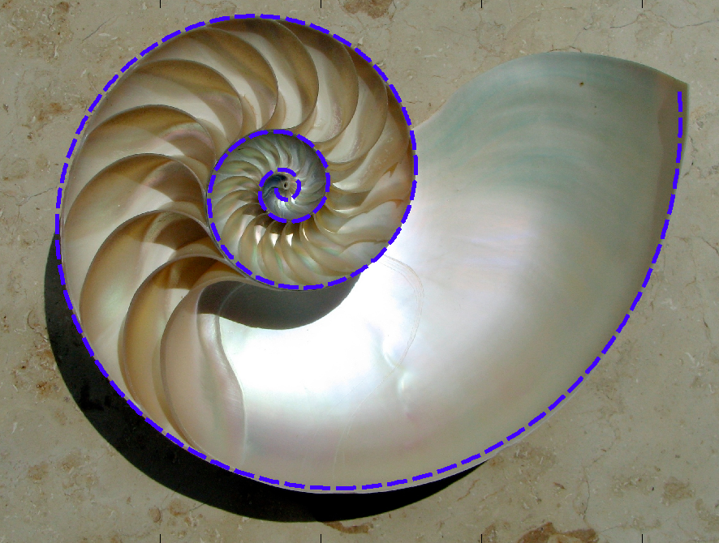

Sexy climbing gear
I think I’m in love with this piece of gear. It uses a logarithmic spiral to convert downward force into a normal force on the sides. Physically, it holds independent of the pull force, as shown in the next photo. The condition only takes into account the friction coefficient. It can work in perfectly parallel cracks witch is amazing.
A logaritmic spyral is a curuve with this parametric equation in cartesian coordinates:
$$x(t) = e^tcos(t)$$
$$y(t) = e^tsin(t)$$
In polar coordinates can be just:
$$\varrho =e^\theta$$
The golden ration is responsible for saving lives…
It is a shape can be found frequently in nature.
